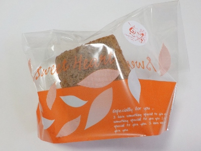
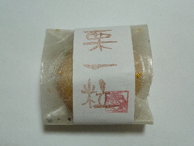
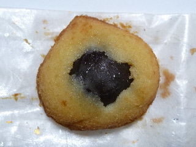
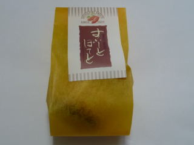
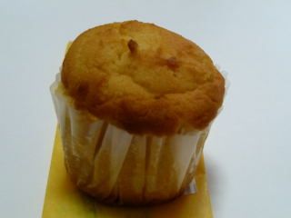

恵季のコーヒーのシフォンケーキ
2024/05/06

ふわふわのシフォンで、王道のシフォンの美味しさだと思いました。口の中で味が広がる感じがとてもよかったです。
コーヒー味は渋みがあって大人な味でした。風味がとても良かったです。
島根県出雲市知井宮町1218-1
2024/05/06

ふわふわのシフォンで、王道のシフォンの美味しさだと思いました。口の中で味が広がる感じがとてもよかったです。
コーヒー味は渋みがあって大人な味でした。風味がとても良かったです。
2012/09/24

和菓子みたいなパッケージです。
中は洋菓子です。

しっとりとしているケーキの中には栗が一粒入っていました。
栗が黒いのでマロングラッセかと思ったんですが、違いました。
栗もケーキもあっさりしてました。
2010/11/03
お土産なんかに重宝する、日持ちがちょっといいスイートポテトです。

縦型のスイートポテトってあんまりないですよね。カップケーキみたいです。

エアーが沢山入ってて、ふんわりでホクホク感のあるスイートポテトでした。
パダー風味があるので、洋菓子らしい味でした。